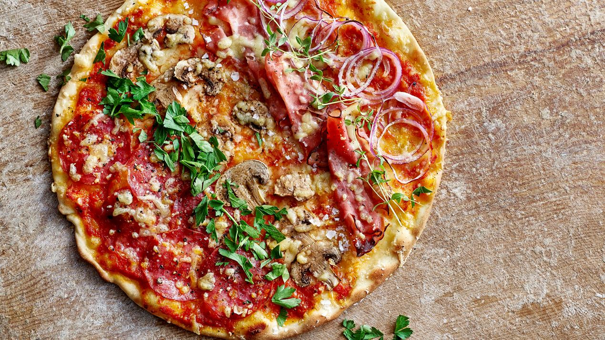

Pizza

A thin pizza with rich decorations and some healthy greens on it
Pizza is a classic that works on all occasions!
Make it for weekday dinner or as a snack for the weekend movie.
Simple recipe for homemade pizza with juicy tomato sauce and grated cheese.
This pizza is topped with ham, salami and mushrooms. You can also vary with your own favourites.
Seasoned with oregano.
Ingredients
The dough
- Yeast 25g
- Warm water max 37° 2½dl
- Butter and/or rapeseed oil 2 spoons
- Salt ½ teaspoon
- Flour 7dl
Filling
- Tomato sauce for pizza or pasta 2dl
- Shredded cheese 6dl
- Red onion 1 piece
- Fresh mushrroms 100g
- Sliced salami 150g
- Sliced smoked ham 150g
- Dried oregano 2 spoons
Garnish with fresh herbs
Do this
The dough
- Stir the yeast with the water in a bowl.
Stir in butter & canola oil, salt and most of the flour. Work to a smooth dough.
- Let the dough rise, covered, for approx. 30 min.
- Prepare the filling in the meantime.
- Set the oven to 225°. Place two trays in the oven so they get hot.
The filling
- Work the dough smoothly and roll it out into two large, thin dough plates directly on baking paper.
- Spread the tomato sauce evenly over the pizzas. Sprinkle over half of the cheese.
- Peel and thinly slice the onion. Slice the mushrooms.
- Place onions, mushrooms, salami and ham in rows on the pizzas.
Sprinkle over the oregano and the rest of the cheese.
- Place the pizzas on the hot plates. Bake approx. 15 min.
Switch places on the pizzas once during baking. Top with herbs.
Done
Back